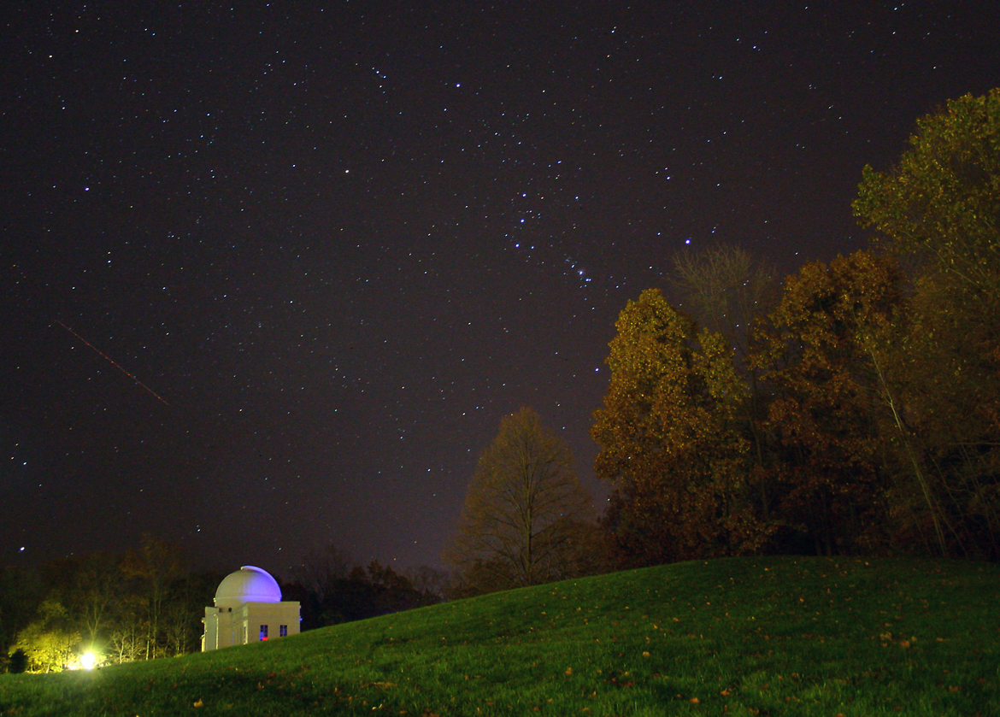

Stellar Sky With Orion
Mike Roman, our resident shutterbug, took this 25 second exposure of the winter sky from the slope opposite Appel Commons. The view is dominated by Orion, just to the left of the trees. The three bright stars going almost straight up are Orion's belt; the three to the lower right are his sword (the middle "star" is actually not a star at all, but the Orion Nebula). The bright, red star to the left of the belt is Betelgeuse, Orion's right shoulder. Rigel, the blue star to the left of the belt/sword, is his left knee. The string of red lights on the left is a plane.
In most constellations, the stars have no relation to each other, and merely happen to be visible in the same direction. This is also the case with Orion — sort of. The stars are generally at very different distances from us, ranging from 250 to 1300 light years away. However, some of the stars of Orion's belt and sword were formed at roughly the same time from the same cloud of gas; the Orion Nebula is but the latest act in this wave of star formation. In fact, long-exposure photographs — or photographs in infrared rather than visible light — show that the Orion Nebula is part of an enormous complex of gas and dust clouds. If the entire complex were visible in this image, it would look as big as one of the foreground trees.
